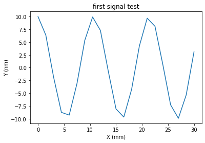
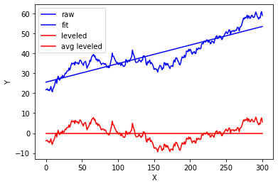

"""
N.B.: Jupyter notebook compatible with RISE and pytest -nblab.
Can be executed as a regular notebook, as a presentation, a test, or converted to html slides.
These are the only things that are added to a conventional notebook:
* RISE settings are edited in notebook metadata and override system-wide settings in ~/.jupyter/nbconfig/rise.json
Refer to https://rise.readthedocs.io/en/stable/customize.html for usage and details.
Run from jupyter menu bar to obtain a live presentation, or generate html with:
jupyter nbconvert --to slides profile_demo_rise.ipynb
* nblab uses cell directives (es. # NBVAL_IGNORE_OUTPUT) to define how to handle output changes.
Refer to https://nbval.readthedocs.io/en/latest/#Skipping-certain-output-types
for usage and details.
You may want to run this test with:
py.test --nbval profile_demo_rise.ipynb
if option `--sanitize-with nbval.cfg` is added, a file containing replacement of regular expression can be
used for a finer control of check (e.g. to ignore results that are expected to differ or exceptions that are expected
to happen).
---------------
Vincenzo Cotroneo 2021/08/14
To use as template for .ipynb demos
""";Profile class
# Da Profile_class_test
# NBVAL_IGNORE_OUTPUTOnce deleted, variables cannot be recovered. Proceed (y/[n])? y
The autoreload extension is already loaded. To reload it, use:
%reload_ext autoreloadimport matplotlib.pyplot as plt
import numpy as np
import os
from dataIO.span import span
from dataIO.fn_add_subfix import fn_add_subfix
from IPython.display import display
from plotting.backends import maximizepwd'C:\\Users\\kovor\\Documents\\python\\pyXTel\\pyxsurf\\pyProfile\\test'np<module 'numpy' from 'C:\\Users\\kovor\\Anaconda3\\lib\\site-packages\\numpy\\__init__.py'>New class implementation (2020/06/25)
Test new implementation of class from profile methods to objects, in analogy to what is done with pySurf. Here we test and document.
import sysThe main class is Profile, representing a set of x,y data with related information and operations.
from pyProfile.profile_class import Profilefrom pyProfile.profile import make_signalCan be defined in the most trivial way from x and y:
P = Profile(x, y, units=['mm','nm'], name='profile_1')It is generally easy to write a routine to read its own format and return a Profile object.
Helper function make_signal (see Appendix or make_signal? for details) can be used to generate a (sinusoid-based) test profile.
I can use Python introspection to get info on each function:
make_signal?# use helper function to create x and y:
x,y = make_signal(amp=10.,L=30.,N=21,nwaves=2.8,ystartend=(0,0),noise=0)
# plot them with usual matplotlib commands:
plt.plot(x,y)
This is how a Profile object can be defined:
P = Profile(x,y,units=['mm','nm'],name='profile_1')P.std()7.044127837632114As well, x and y can be retrieved either as P.x and P.y, or with x,y = P()
P()(array([ 0. , 1.5, 3. , 4.5, 6. , 7.5, 9. , 10.5, 12. , 13.5, 15. ,
16.5, 18. , 19.5, 21. , 22.5, 24. , 25.5, 27. , 28.5, 30. ]),
array([10. , 6.3742399 , -1.87381315, -8.7630668 , -9.29776486,
-3.09016994, 5.35826795, 9.92114701, 7.28968627, -0.6279052 ,
-8.09016994, -9.68583161, -4.25779292, 4.25779292, 9.68583161,
8.09016994, 0.6279052 , -7.28968627, -9.92114701, -5.35826795,
3.09016994]))P.xarray([ 0. , 1.5, 3. , 4.5, 6. , 7.5, 9. , 10.5, 12. , 13.5, 15. ,
16.5, 18. , 19.5, 21. , 22.5, 24. , 25.5, 27. , 28.5, 30. ])Plotting is standard python plotting (matplotlib), accept same arguments and manipulation.
P.plot()
plt.title('first signal test')Text(0.5, 1.0, 'first signal test')
#TODO: test remove_nan_ends.
#TODO: test register_profile.Profile methods and functions
Algebric operations
We build different test profiles.
Create two similar quadratic profiles a and b with different x values:
BEWARE: units in algebraic operations are not verified, usually the ones from first term are used for result, this may change in future.
# Make different test profiles:
x0 = np.arange(5)
a = Profile(x0,x0**2)
a.plot(marker='o',ls='-',label = 'a')
b = Profile(x0+0.5,(x0+0.5)**2)
b.plot(marker='x',ls='-',label = 'b')
plt.legend(loc=0)<matplotlib.legend.Legend at 0x2f9e5502b00>
Algebraic operations can be performed on Profile objects.
Resampling can be directly accessed by resample method, but there is usually no need to perform, because it is automatically handled by algebraic operations (resample on first by default, ):
c = a.resample(b)# plot interpolation
a.plot(marker='+',ls='-',label = 'a')
b.plot(marker='x',ls='-',label = 'b')
c.plot(marker='o',ls='',label='a resampled on b')
plt.legend(loc=0)<matplotlib.legend.Legend at 0x2f9e557cfd0>
Here some examples of algebraic operations on different x:
a.plot(marker='o',ls='-', label = 'a')
b.plot(marker='x',ls='-', label = 'b')
(a+b).plot(label = 'a + b',marker='o')
((a+b)/2).plot(label = '(a + b)/2',marker='d',ls='')
(3*a-b).plot(label = '(3*a - b)',marker='x',ls='-')
plt.grid()
plt.legend(loc=0)<matplotlib.legend.Legend at 0x2f9e5615748>
#(a/b).plot(label='a/b')
#(b/a).plot(label='b/a')
(c/b).plot()
plt.title('ratio between interpolated and original')Text(0.5, 1.0, 'ratio between interpolated and original')
Leveling
# riproduce esempio di matlab da:
# https://it.mathworks.com/help/matlab/data_analysis/detrending-data.html
#
#
fn = r'input_data\matlab-normaldata.dat'y = np.genfromtxt(fn)
p=Profile(np.arange(len(y)),y)
p.plot(color='b',label = 'raw')
(p-p.level()).plot(color='b',label = 'fit')
p.level().plot(color='r',label = 'leveled')
plt.plot(p.x,p.y*0+p.level().y.mean(),color='r',label = 'avg leveled')
plt.legend()<matplotlib.legend.Legend at 0x2f9e5743438>
Outliers filtering
TBD
a=0a = 1print(a)1